Guide
Perform analysis
Figure 1 shows the toolbar button/menu for the plugin. Clicking on the icon will open the plugin. When a user clicks on the drop-down button, they will be presented with four options:
- CPLUS: Close or open the plugin dock widget
- Settings: Open the settings for the plugin
- Help: Takes the user to the online guide for the plugin
- About: Will take the user to the About section on the GH pages

Figure 1: CPLUS toolbar icon
Open the CPLUS dockwidget by clicking on the CPLUS toolbar icon (Figure 1).
Step 1: Scenario Information
The first step focuses on the Scenario Information. A Scenario refers to an overall analysis done in an area of interest (AOI). Different criteria and priorities for spatial decision-making and comparison will be considered for each scenario.
- Scenario name: A name for the analysis to be performed
- Scenario description: A detailed description of the analysis
- Extent: The area of interest for this analysis. This can be calculated from the current canvas view extent, a layer, or an extent drawn by the user
- Figure 2 shows an example of Step 1
- Once the information has been provided, click Step 2
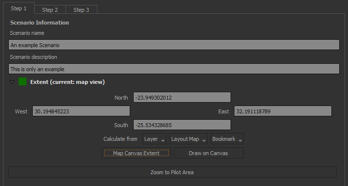
Figure 2: Step 1 focusses on Scenario Information
Step 2: Pathways and models
This step deals with the Natural Climate Solution (NCS) pathways and the Implementation models (IM). A NCS pathway can be defined as a composite spatial layer on specific land use classes and other factors that determine areas ideal for a specific use case (e.g. Animal mangement). An IM is a combination of NCS pathways represented in an AOI spatial layer. Figure 3 shows the UI.
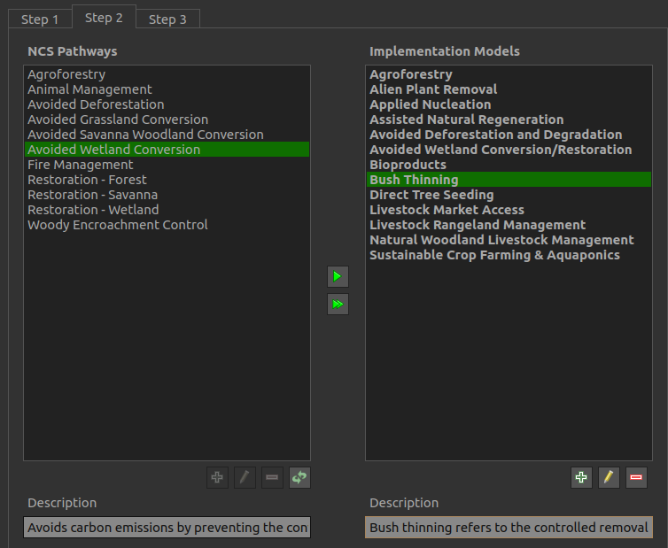
Figure 3: Step 2 allows the user to create and edit NCS pathways and Implementation Models
Step 2 buttons (Figure 4):
- Add: Adds a new pathway or model
- Editing: Edit and existing pathway or model
- Delete: Delete a pathway or model
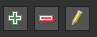
Figure 4: Create, delete, and edit buttons
NCS Pathway
- Click on the left green plus button to add a new pathway (Figure 5)
- Provide a Name and Description for the pathway
- Two approaches to select a layer: A layer from the QGIS canvas, or Upload from a file
- Click OK
- The new NCS pathway will be added
NOTE: If the NCS pathway is broken (e.g. layer or file cannot be found), the pathway text
will be highlighted in red. The user will need to rectify the issue before continuing to
step 3.
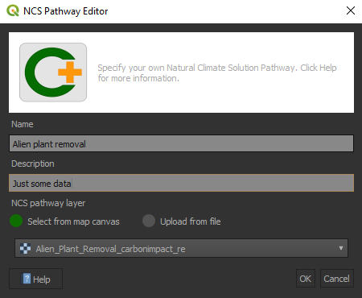
Figure 5: NCS Pathway creator/editor
Implementation model
Add pathways to an existing IM:
- Select the IM to which a pathway should be added
- Select the pathway you want to add to the IM
- Click the right arrow
 to add a pathway to the selected IM
to add a pathway to the selected IM - Click the double right arrow
 to add all pathways to the IM
to add all pathways to the IM - The user can also drag-and-drop a pathway onto the desired IM
How to add a new IM:
- Click on the right green plus button to add an Implementation model (Figure 6)
- Provide a Name and Description
- (optional) The user can provide an existing raster for the IM. Enable Map layer to do this
- Click OK
- The new Implementation model will be added
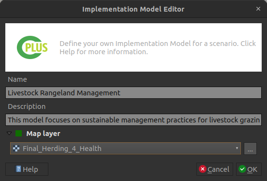
Figure 6: Implementation Model creator/editor
- The final step is to select each of the IMs a user want to include in the scenario run
- A user can exclude IMs if they don't want to include it, even if the IM has pathways

Figure 7: Selected Implementation models
Before proceeding to Step 3, a user needs to define at least one NCS pathway layer for an implementation model else a warning message will be displayed as shown in Figure 7 below:
Step 3: Priority weighting
The final step deals with the Weighting priorities and Priority groups. These weights will be applied when the user starts running the scenario. An example is shown in Figure 11.
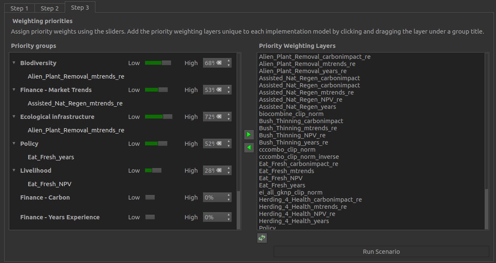
Figure 8: Step 3 allows the user to set the Weights of each Priority Group
The priority weighting layers can be selected and added and removed into each priority group by using the arrow buttons.
Add priority layers
Select the target layer from the priority weighting layers list and the destination group from the priority groups and use the left arrow button to add the layer into the group.
Remove priority layers
Select the target layer from the priority weighting layers list from its priority group and
use the right arrow button  to remove the layer into the group.
to remove the layer into the group.
Create custom priority layers
- Click on
 to add a new custom priority layer, or
to add a new custom priority layer, or  to edit an existing priority layer
to edit an existing priority layer - This will open the Priority Layer dialog (see Figure 9)
- The following parameters needs to be set:
- Priority layer: The layer which represents the priority layer
- Priority layer name: A unique identifier for the priority layer
- Priority layer description: A detailed description of the priority layer
- Click the Assign implementation models button to select IMs to be associated with the priority layer (see Figure 10)

Figure 9: Priority layer dialog
- Select the IMs you want to be associated with the priority layer
- Click OK
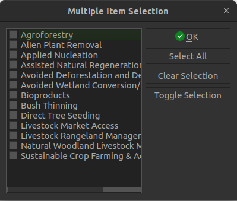
Figure 10: Implementation model selection for priority layers
- : Remove the selected PWL
Setting groups values
Move the slider to adjust the weight of each group, values can also be set manually, by using the left input spin box. Once done selecting weights, click Run Scenario button to run the analysis.
Steps 1 to 3 example
The following recording (Figure 11) shows an example on how to do Step 1, 2 and 3.
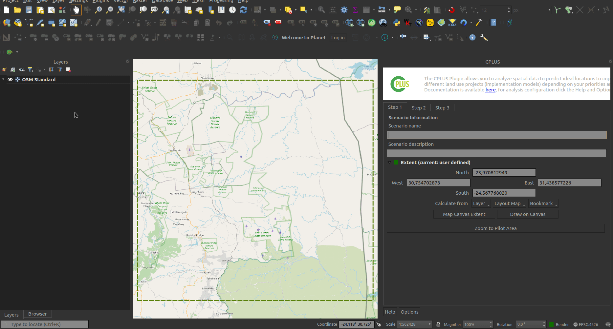
Figure 11: Shows how to implement Step 1, 2 and 3 in QGIS
Processing
- Once the user has provided all desired parameters, click Run Scenario
- The processing dialog will open (Figure 12)
- The processing will take a while, depending on the number of IMs and pathways provided for each IM
- Click the Cancel button to stop the processing

Figure 12: Processing dialog while the algorithm is running
- Figure 13 will be the result if the processing succceeded
- The user should take note that the View Report button is now available

Figure 13: Processing dialog if successfull
Processing results
The following groups and layers will be added to the QGIS canvas once the processing finishes (see Figure 14): - A group containing the results - Implementation Model Maps: Non-weighted IMs created by the user in Step 2 - Weighted Implementation Model Maps: Weighted IMs based on the IMs added in Step 2 and weighing set in Step 3 - NCS Pathways Maps: Pathways used for each IM in Step 2. If a layer were provided as the IM in Step 2, this will contain no pathways

Figure 14: Groups and layers added to the QGIS canvas
An example of output results in QGIS is detailed by Figure 15
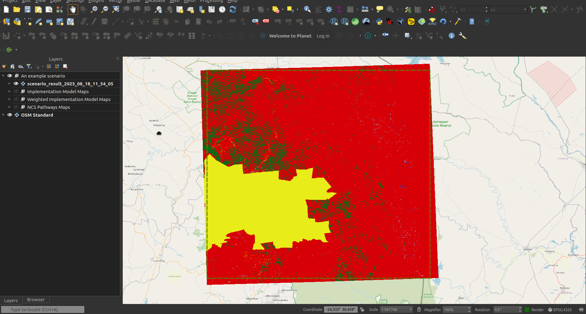
Figure 15: A recording example of an example scenario
Report generating
- Click the View Report button
- The user will have the following options:
- Layout designer:
- Open PDF:
- Help: Open the help documentation related to the reports

Figure 16: Report options
- Figure 17 shows an example of a report opened in the layout designer

Figure 17: Report opened in the QGIS layout designer
- Figure 18 shows an report in PDF format
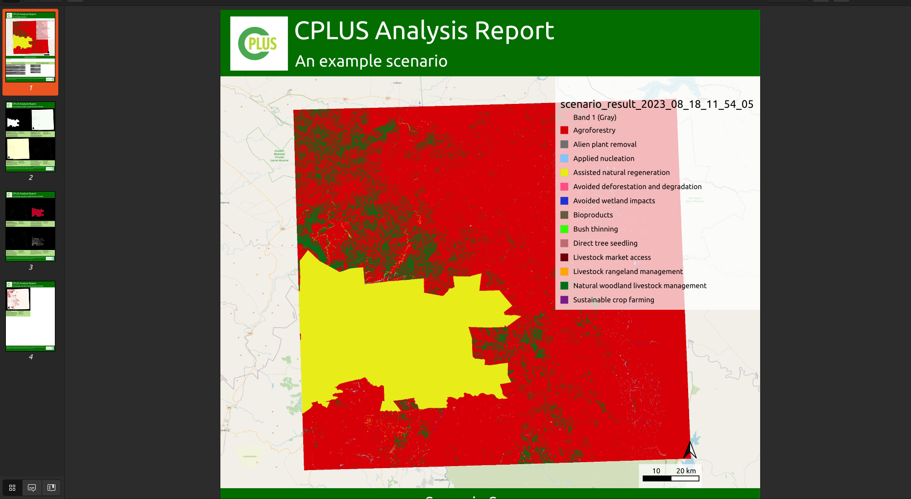
Figure 18: PDF version of a report
Generated report example
Here is an example on how to open a report in the QGIS layout designer, or as a PDF (Figure 19).

Figure 19: Example of a generated report in PDF and layout designer formats
Settings
Open CPLUS settings
The user can follow two approaches to open the CPLUS settings.
QGIS options (Figure 20):
- Click on Settings -> Options
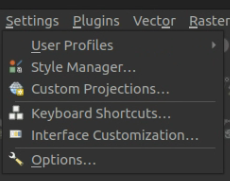
Figure 20: QGIS settings
- Select the CPLUS tab to the left
- This will open the CPLUS settings dialog. See Figure 21 for an example
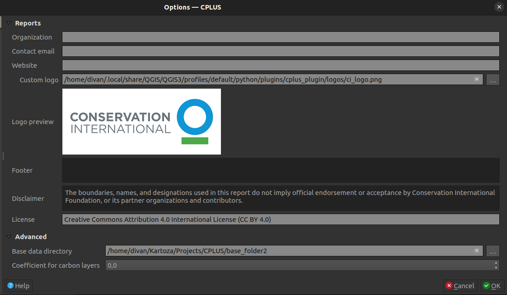
Figure 21: CPLUS section as loaded in the QGIS settings dialog
CPLUS toolbar (Figure 22): - Click on the CPLUS toolbar drop-down - Select Settings - This will take you directly to the CPLUS settings dialog in the QGIS options

Figure 22: CPLUS toolbar button
CPLUS settings
A short description of each available setting a user can change. Most are optional.
Configure Analysis:
- Settings will be added as the plugin development continues
Reports:
- Information which will be included when a report is generated. These settings are optional, and will be excluded from the report if not provided
- Organization: The organization(s) to be included in the report
- Contact Email: Contact email for the author
- Website: A website link to the project or company
- Custom logo: Enable and provide a custom logo of your choosing. If disabled, the CI logo will be used in the report
- Footer: Footer section for the report
- Disclaimer: A disclaimer to be added to the report
- License: A license to be added to the report
Advanced:
- Base data directory (required): Data accessed and download by the plugin will be stored here
- Coefficient for carbon layers: Value applied during processing to the carbon-based layers. Default is 0
Figure 23 shows an example of updating and applying CPLUS settings.
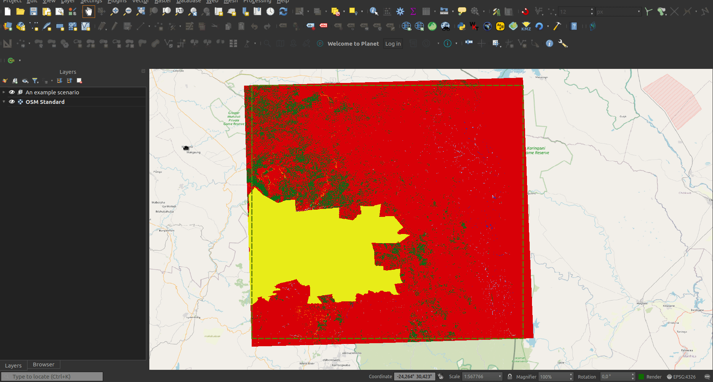
Figure 23: CPLUS settings example